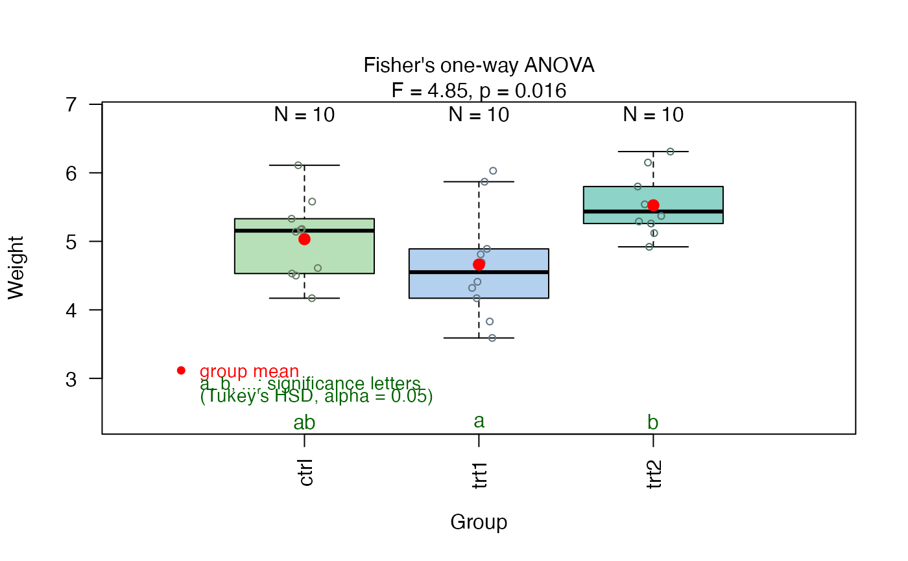
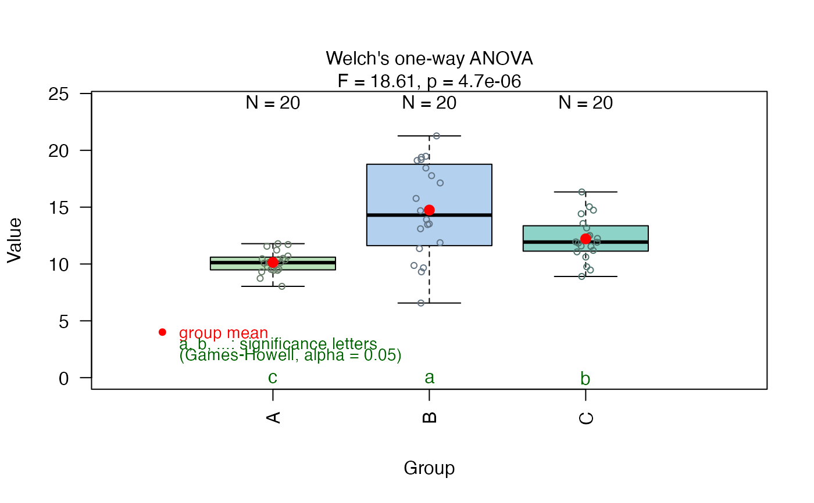

Internal function that performs ANOVA or Welch's one-way test and corresponding post-hoc comparisons. Uses TukeyHSD for equal variances (Fisher's ANOVA) and Games-Howell for unequal variances (Welch's ANOVA).
Usage
vis_anova(
samples,
fact,
conf.level = conf.level,
samplename = "",
factorname = "",
cex = 1
)Arguments
- samples
Numeric vector; the dependent variable.
- fact
Factor; the grouping variable.
- conf.level
Numeric; confidence level for tests and intervals (default: 0.95).
- samplename
Character; label for y-axis (default: "").
- factorname
Character; label for x-axis (default: "").
- cex
Numeric; character expansion factor for plot elements (default: 1).
Value
A list with components:
- summary statistics of ANOVA
Summary of Fisher's ANOVA or Welch's oneway test
- post-hoc analysis
TukeyHSD object or Games-Howell results in compatible format
- conf.level
The confidence level used
Details
The function first tests for homogeneity of variance using Levene's test. If variances are equal (p > alpha), Fisher's one-way ANOVA with Tukey's HSD post-hoc is performed. If variances are unequal (p <= alpha), Welch's one-way ANOVA with Games-Howell post-hoc is performed.
The function produces a box plot with jittered points and group means (red diamonds for the parametric branches), annotated with a compact letter display showing which groups differ significantly.
Examples
# Example with equal variances (uses Fisher's ANOVA + TukeyHSD)
data(PlantGrowth)
result1 <- vis_anova(PlantGrowth$weight, PlantGrowth$group,
samplename = "Weight", factorname = "Group")

# Example with unequal variances (uses Welch's ANOVA + Games-Howell)
# Create data with heterogeneous variances
set.seed(123)
group_a <- rnorm(20, mean = 10, sd = 1)
group_b <- rnorm(20, mean = 15, sd = 5) # Much larger variance
group_c <- rnorm(20, mean = 12, sd = 2)
values <- c(group_a, group_b, group_c)
groups <- factor(rep(c("A", "B", "C"), each = 20))
result2 <- vis_anova(values, groups,
samplename = "Value", factorname = "Group")
